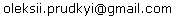

|
English |
|
Завантажте та виконайте інсталяційну програму : Translate.Net version 0.1.3043.33387, 2008-05-01 Потреби у системних ресурсах Мінімальна конфигурація
Для компіляції потрібно мати Visual Studio 2005 або .Net SDK (доступно безкоштоно від Microsoft) та безкошновне інтегроване середовище розробки SharpDevelop . Інсталяційна програма зроблена за допомогою конструктора інсталяційних пакетів Inno Setup. Вихідні тексти доступні під ліцензією Mozilla Public License та альтернативно під лицензією GNU General Public License та\або GNU Lesser General Public License. Ліцензія Перед використанням Translate.Net, користувач повинен погодитися із ліцензійною угодою як частиною процесу установки програми. Ліцензія та політика конфедіційності також наведені нижче. TRANSLATE.NET END-USER SOFTWARE LICENSE AGREEMENT Version 1.0 A SOURCE CODE VERSION OF CERTAIN TRANSLATE.NET FUNCTIONALITY THAT YOU MAY USE, MODIFY AND DISTRIBUTE IS AVAILABLE TO YOU FREE-OF-CHARGE FROM http://translateclient.googlepages.com/ UNDER THE MOZILLA PUBLIC LICENSE and other open source software licenses. The accompanying executable code version of Translate.Net and related documentation (the "Product") is made available to you under the terms of this TRANSLATE.NET END-USER SOFTWARE LICENSE AGREEMENT (THE "AGREEMENT"). BY CLICKING THE "ACCEPT" BUTTON, OR BY INSTALLING OR USING THE TRANSLATE.NET, YOU ARE CONSENTING TO BE BOUND BY THE AGREEMENT. IF YOU DO NOT AGREE TO THE TERMS AND CONDITIONS OF THIS AGREEMENT, DO NOT CLICK THE "ACCEPT" BUTTON, AND DO NOT INSTALL OR USE ANY PART OF THE TRANSLATE.NET. 1. LICENSE GRANT. The author (Oleksii Prudkyi) grants you a non-exclusive license to use the executable code version of the Product. This Agreement will also govern any software upgrades provided by author that replace and/or supplement the original Product, unless such upgrades are accompanied by a separate license, in which case the terms of that license will govern. 2. TERMINATION. If you breach this Agreement your right to use the Product will terminate immediately and without notice, but all provisions of this Agreement except the License Grant (Paragraph 1) will survive termination and continue in effect. Upon termination, you must destroy all copies of the Product. 3. PROPRIETARY RIGHTS. Portions of the Product are available in source code form under the terms of the Mozilla Public License and other open source licenses (collectively, "Open Source Licenses") at http://translateclient.googlepages.com/. Nothing in this Agreement will be construed to limit any rights granted under the Open Source Licenses. Subject to the foregoing, author, for itself and on behalf of his licensors, hereby reserves all intellectual property rights in the Product, except for the rights expressly granted in this Agreement. You may not remove or alter any trademark, logo, copyright or other proprietary notice in or on the Product. This license does not grant you any right to use the trademarks, service marks or logos of author or its licensors. 4. PRIVACY POLICY. You agree to the Translate.Net Privacy Policy, made available online at http://translateclient.googlepages.com/download.en.html, as that policy may be changed from time to time. When author changes the policy in a material way a notice will be posted on the website at www.translateclient.googlepages.com, and when any change is made in the privacy policy, the updated policy will be posted at the above link. It is your responsibility to ensure that you understand the terms of the privacy policy, so you should periodically check the current version of the policy for changes. 5. DISCLAIMER OF WARRANTY. THE PRODUCT IS PROVIDED "AS IS" WITH ALL FAULTS. TO THE EXTENT PERMITTED BY LAW, AUTHOR AND LICENSORS HEREBY DISCLAIM ALL WARRANTIES, WHETHER EXPRESS OR IMPLIED, INCLUDING WITHOUT LIMITATION WARRANTIES THAT THE PRODUCT IS FREE OF DEFECTS, MERCHANTABLE, FIT FOR A PARTICULAR PURPOSE AND NON-INFRINGING. YOU BEAR THE ENTIRE RISK AS TO SELECTING THE PRODUCT FOR YOUR PURPOSES AND AS TO THE QUALITY AND PERFORMANCE OF THE PRODUCT. THIS LIMITATION WILL APPLY NOTWITHSTANDING THE FAILURE OF ESSENTIAL PURPOSE OF ANY REMEDY. SOME JURISDICTIONS DO NOT ALLOW THE EXCLUSION OR LIMITATION OF IMPLIED WARRANTIES, SO THIS DISCLAIMER MAY NOT APPLY TO YOU. 6. LIMITATION OF LIABILITY. EXCEPT AS REQUIRED BY LAW, AUTHOR AND LICENSORS, CONTRIBUTORS AND AGENTS WILL NOT BE LIABLE FOR ANY INDIRECT, SPECIAL, INCIDENTAL, CONSEQUENTIAL OR EXEMPLARY DAMAGES ARISING OUT OF OR IN ANY WAY RELATING TO THIS AGREEMENT OR THE USE OF OR INABILITY TO USE THE PRODUCT, INCLUDING WITHOUT LIMITATION DAMAGES FOR LOSS OF GOODWILL, WORK STOPPAGE, LOST PROFITS, LOSS OF DATA, AND COMPUTER FAILURE OR MALFUNCTION, EVEN IF ADVISED OF THE POSSIBILITY OF SUCH DAMAGES AND REGARDLESS OF THE THEORY (CONTRACT, TORT OR OTHERWISE) UPON WHICH SUCH CLAIM IS BASED. THE AUTHOR LIABILITY UNDER THIS AGREEMENT WILL NOT EXCEED THE GREATER OF $5 (FIVE DOLLARS) AND THE FEES PAID BY YOU UNDER THE LICENSE (IF ANY). SOME JURISDICTIONS DO NOT ALLOW THE EXCLUSION OR LIMITATION OF INCIDENTAL, CONSEQUENTIAL OR SPECIAL DAMAGES, SO THIS EXCLUSION AND LIMITATION MAY NOT APPLY TO YOU. 7. EXPORT CONTROLS. This license is subject to all applicable export restrictions. You must comply with all export and import laws and restrictions and regulations of any United States or foreign agency or authority relating to the Product and its use. 8. U.S. GOVERNMENT END-USERS. This Product is a "commercial item," as that term is defined in 48 C.F.R. 2.101, consisting of "commercial computer software" and "commercial computer software documentation," as such terms are used in 48 C.F.R. 12.212 (Sept. 1995) and 48 C.F.R. 227.7202 (June 1995). Consistent with 48 C.F.R. 12.212, 48 C.F.R. 27.405(b)(2) (June 1998) and 48 C.F.R. 227.7202, all U.S. Government End Users acquire the Product with only those rights as set forth therein. 9. MISCELLANEOUS. (a) This Agreement constitutes the entire agreement between author and you concerning the subject matter hereof, and it may only be modified by a written amendment signed by an author or authorized executive of author. (b) Except to the extent applicable law, if any, provides otherwise, this Agreement will be governed by the laws of the Ukraine and of the state of California, U.S.A., excluding its conflict of law provisions. (c) This Agreement will not be governed by the United Nations Convention on Contracts for the International Sale of Goods. (d) If any part of this Agreement is held invalid or unenforceable, that part will be construed to reflect the parties' original intent, and the remaining portions will remain in full force and effect. (e) A waiver by either party of any term or condition of this Agreement or any breach thereof, in any one instance, will not waive such term or condition or any subsequent breach thereof. (f) Except as required by law, the controlling language of this Agreement is English. (g) You may assign your rights under this Agreement to any party that consents to, and agrees to be bound by, its terms; the author may assign its rights under this Agreement without condition. (h) This Agreement will be binding upon and inure to the benefit of the parties, their successors and permitted assigns. This EULA is modified Mozilla Firefox 2 EULA stored at http://www.mozilla.com/en-US/legal/eula/ Translate.Net Privacy Policy January 2008 This privacy policy explains how Translate.Net collects and uses information about users of the official Translate.Net tool. It does not apply to other author's websites, products or services. Types of Information Because Translate.Net emulate web browsers, Translate.Net sends certain information to the websites and other network services when in use. This information falls into three categories:
Information Translate.Net Sends to Websites and other network services When function, Translate.Net sends information to the websites and other network services by emulating web browsers and using Microsoft Internet Explorer api, including (1) Non-Personally-Identifying Information of the type that web browsers typically make available, such as your language preference and the date and time of your visit; and (2) Potentially Personally-Identifying Information such as your IP address and Translate.Net related information (queries, subjects and languages), cookies. This information may be logged on the websites and network services. What information is logged and how that information is used depends on the policies of each of the websites and network service used. Each website and network service determines its own privacy policy for the distribution and use of this Non-Personally-Identifying Information and Potentially-Personally-Identifying Information. If you are concerned about how a website or network service will use this information, check out its privacy policy. Interactive Product Features Automated Update Service. Translate.Net's automatic update feature periodically checks to see if an updated version of Translate.Net is available from author. This feature sends Non-Personally-Identifying Information to author, including the version of Translate.Net you are using. Author uses this Non-Personally-Identifying Information to provide you with updated versions of Translate.Net. Author do not collect or track any Personally-Identifying Information or any information about the Web sites or network services used, and author do not release the raw information obtained from this feature to the public. Author may release reports containing aggregate data. To prevent Translate.Net from obtaining this information, you can turn this feature off in Translate.Net's preferences. Ads. Translate.Net's ads may be integrated in result view. This feature sends Potentially Personally-Identifying Information to ads services to generate ads based on context of your queries. Such information include queries, subjects, languages. Cookies A cookie is a small string of information that a website stores on your computer and that web browsers make available to that website each time you return. Translate.Net uses cookies stores on your computer by Microsoft Internet Explorer when requested to do so by websites only at time when query results shown. A website uses cookies to help identify and track visitors, the use of the website, and visitors' website access preferences across multiple requests and visits. It is possible to include Personally-Identifying Information, or references to such information, in cookies, thereby enabling websites to track the online movements of particular individuals. To prevent Translate.Net from sending cookies to any website, configure Microsoft Internet Explorer to disable cookies. Privacy Policy Changes Author may change the Translate.Net Privacy Policy from time to time. Any and all changes will be reflected on this page. When author changes this policy in a material way a notice will be posted on the website at http://translateclient.googlepages.com. Substantive changes may also be announced through the other mechanisms like a mailing list. It is your responsibility to ensure that you understand the terms of this Privacy Policy. You should periodically check this page for any changes to the current policy. For More Information If you have questions about this privacy policy, please contact author at: . This Privacy Policy is modified "Mozilla Firefox Privacy Policy" stored at http://www.mozilla.com/en-US/legal/privacy/firefox-en.html |
|
Авторські права на вміст сайту належать
© 2008 Олексій Прудкий. Всі права застережено.
|